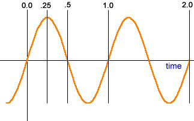

Éditeur de particules
https://developer.valvesoftware.com/wiki/Category:Particle_System
Les particules servent à créer toutes sortes d'effets de la fumée à un feu en passant par un tir au blaster.
Pour ouvrir l'éditeur de particules, il faut mettre la commande.
-tools -nop4
en options de lancement steam, une fois lancé aller sur tools->Particle Editor

Les particules se base sur un matérial
Il existe plusieurs Properties
Properties
Permet de selectionner le matérial servant de base aux particules.
Renderer
Pemet de définir comment la particule sera dans le rendu.
Operator
Permet l'execution d'une fonction sur chaque particule pour chaque image ainsi que le mouvement de celles-ci.
Initializer
Permet de Définir l'état de départ des particules crée, ainsi que sa couleur, sa taille ou son alpha.
Emitter
Définit le nombre de particules crée et dans quelle période de temps.
Créez votre premier système de particule
Pour crée son système de particules.
-
Ajouter allons sur les Properties en bas à gauche cliquer dessus et aller sur Renderer ajoutez "Animated Sprite Renderer".
-
Nous voulons spécifier où nous avons crée pour cela, nous allons sur Initializers puis add "Position Within Sphere Initializer" là-dessus metter "speed_min" et "speed_max' à 64, sans spécifier une position initiale les particules ne sauront pas apparaitre correctement.
-
Sur Emitter add "emit_Continuously", vous devrez voir un carré blanc apparaître.
-
Maintenant allons sur Operator faite add "Movement Basic" pour faire bouger les particules Maintenant, vous devrez voir bouger les carrés blanc, une fois fait ajoutez "Lifespan decay" cela définit la durée de vie de la particule.
-
Allons sur Initializer add "Lifetime Random" nous allons définir la durée de vie sur "lifetime_min" sur 2 et "lifetime_max" sur 4.
-
Maintenant, nous allons prendre un meilleur material que des cubes blancs pour cela allons sur Properties et appuyons sur les trois points de "material", nous vous conseillons d'essayer "blueblacklargebeam.vmt" ou "hydragutbeam.vmt".
-
Pour finir sur Operator, nous allons ajouter un "Alpha Out Random" cela permet de données une valeur à sa durée de vie, la particule va devenir transparente avant de disparaitre.
Performance
Max_particles
Sur les Properties, nous pouvons définir la valeur maximum des particules de base, elle est à 1000 (1004)m de base, nous n'allons pas dépasser mille particules.
Particles Function Name
Nous n'allons pas détailler tous les Function Name, mais nous allons décrire les plus importantes.
Renderer
Render_animated_sprites
C'est le moteur de rendu de base, il crée des sprites animé.
Render_rope
Permet de faire un rendu des particules comme une corde.
Très utile pour faire certaines fumées ou des effets d'électricité et de foudre.
Render_Blobs
Ce rendu est fait pour les gouttes et les liquides, il est utilisé dans Portal 2 pour le Gel.
Operators
Lifespan Decay
Avec les "Alpha_fade" Elles Permettent de faire disparaitre les particules cela leurs donne une durée de vie.
Oscillate
Permet de faire des effets de particules Ondulé, il y en a deux "Oscillate Scalar" et "Oscillate Vector".

Initializers
Color Random
Permet de donner à certaines particules une couleur aléatoire.
Mettre et tester les particules dans votre map
Dans hammer placer infor_partcile_system.

Pour redemarer les particules
ent_fire info_particle_system stop
ent_fire info_particle_system start